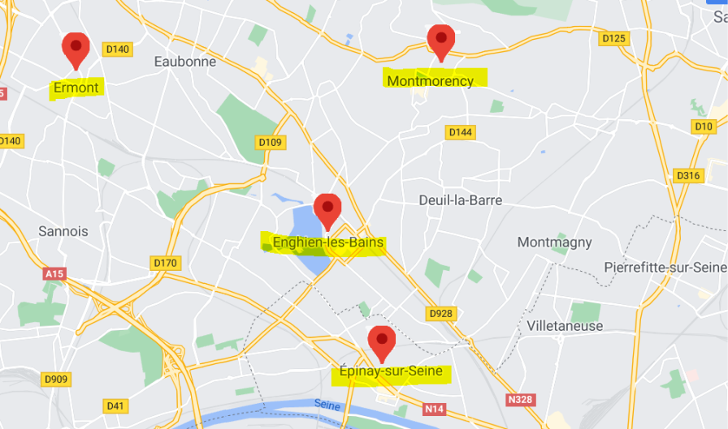

Les points de retraits
Les points de retraits disponibles sont : place de la gare à Ermont, à saint-Gratien, à Enghien, à Epinay et à Montmorency.
La livraison peut également se faire dans tous les magasins bio et les structures associatives ou toutes structures éco-responsables et bio.
Les plats seront livrés dans des bocaux en verre au prix de 1€ entièrement réutilisables pour éviter l'utilisation de plastique et la polution dans les rues pour un soucis d'éco-résponsabilité.
